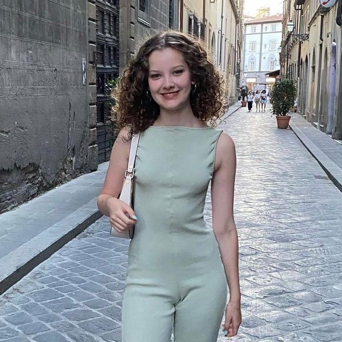
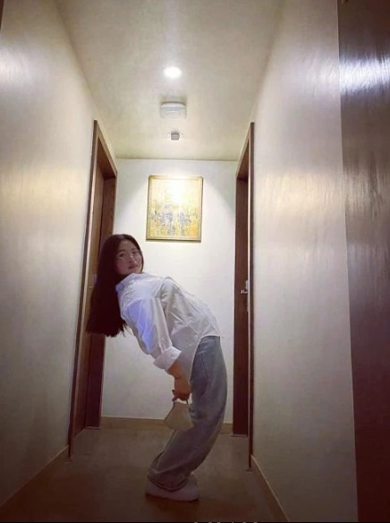

Born in Istanbul, Sude İşeri is 20 years old, who after completing her education at Üsküdar American High School, moved to London for university in September 2023. She was introduced to jazz and Latin dance at the age of nine and started attending group classes. At the age of 14, with the guidance of her Latin dance instructor, she started competing in salsa as a licensed athlete in a professional sports club. She competed in solo and partner categories for four seasons, coming second in the Youth Solo A Class and Inter-Club Partnered B Class categories in the competitions held throughout Turkey. After her partner and I reached the finals in the Turkish championship, they participated in the world championship in salsa and bachata branches in Macedonia to represent their country, and ranked seventh in the world. She has also given lessons to children's groups in salsa and hip-hop for a year. She came second in England with the advanced jazz dance team of UCL, the university she currently studies in. Currently, while she is actively continuing her dance life in London with branches such as jazz, salsa, hip-hop, high-heels, she is also preparing for the Turkish championship in the salsa branch.)

Gyan Kumari Sunuwar,a 31 year old belonging to Hiphop culture community and a foundation base of b-griling and hiphop. She started her b-griling from NHF( Nepal Hiphop Foundation). As being part of this culture she got a chance to represent a breaking and hiphop culture all over Nepal through touring with the help of US Embassy. Along with her dance career she decided to continue her studies and completing her bachelor degree in Arts , choosing Dance and Home science as her main course subject that includes Indian classic and Nepali cultural dances. She even joint (SAA) sushila Arts academy for ballet dance as an intern and still continuing her delightful journey now. As for her teaching career she has worked as a Dance Instructor in different schools and Dance studios, and is currently working in sushila arts academy as a HipHop teacher and Ullens Kathmandu school as a Dance teacher.